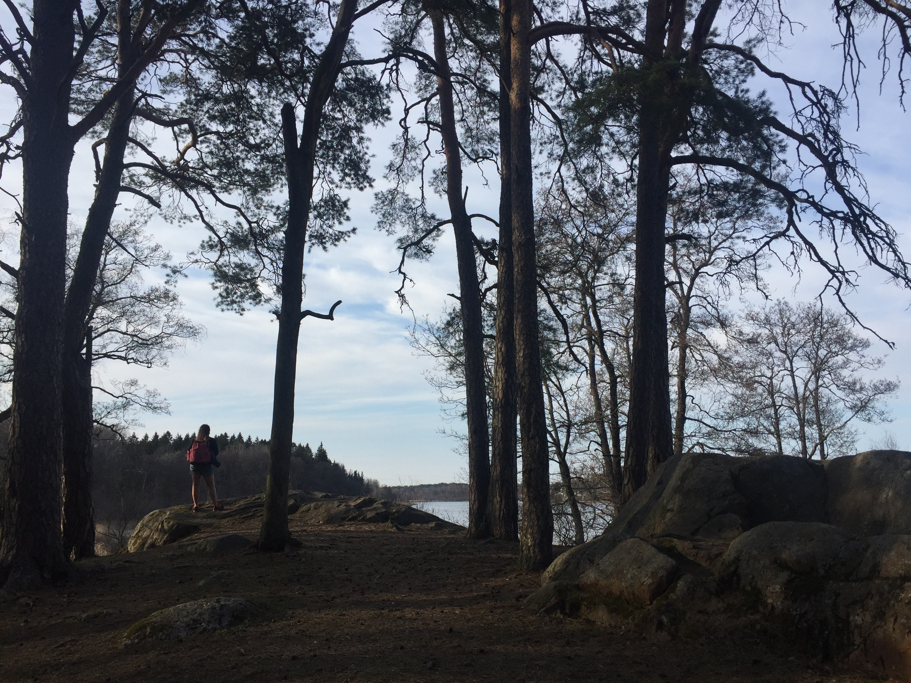

Know your municipality

Sollentuna Map
The map of Solletuna Kommun will provide you with information on points of interest in the area. Click and Enjoy!
Facts about the territory and demographics of Sollentuna Kommun
| Region |
Svealand |
| Province |
Stockholm |
| Surface (Km2) |
58,33 |
| Population Density |
1,243.4 |
| Inhabitants |
72,528 |
| Families |
28,976 |
| Males(%) |
50,2 |
| Females(%) |
49,8 |